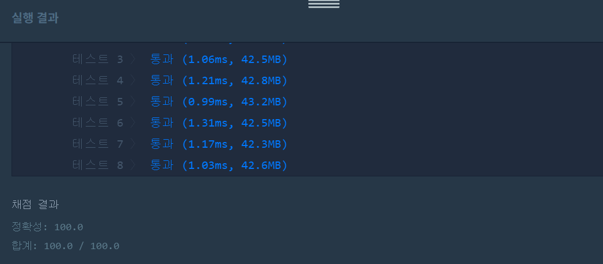

문제
https://programmers.co.kr/learn/courses/30/lessons/42861
테스트케이스 추가
| n(int) | costs(int[][]) | Return |
|---|---|---|
| 4 | [[0, 1, 1], [2, 3, 1], [0, 2, 2], [0, 3, 3]] | 4 |
| 6 | [[0, 1, 1], [2, 3, 2], [4, 5, 2], [2, 4, 3], [1, 5, 4]] | 11 |
( ᐛ )و 도전
1. 설계
=> 크루스칼(Kruskal) 알고리즘을 이용한다.
- 비용을 오름차순으로 정렬한다.
- 사이클이 생기지 않도록 처음부터 체크하며 연결한다.
- 섬 둘다 true면 연결되었으므로 넘어감
- 둘 다 false면 boolean 변수로 체크해두고 다음으로 넘어감
- 둘 중 하나가 false면 연결해주고, 앞에서 둘다 false라 넘어간 것이 있는지 체크. 있다면 앞에서부터 다시 체크.
2. 구현 (성공 코드)
import java.util.*;
/**
*
* @author HEESOO
*
*/
class Solution {
public int solution(int n, int[][] costs) {
int answer = 0;
boolean[] visit=new boolean[n];//true면 섬이 연결된 것
Arrays.sort(costs, new Comparator<int[]>(){//비용 기준 오름차순 정렬
@Override
public int compare(int[] a, int[] b){
return a[2]-b[2];
}
});
int connect=0;//섬들이 모두 연결되었는지 체크
int i=0;//섬들을 순회하는 인덱스
int a=-1,b=-1;//두 섬을 가져오는 변수
visit[costs[0][0]]=true;//시작점
boolean passIdx=false;//둘다 F라 뛰어넘은 경우 true로 저장
while(connect<n&&i<costs.length){//모든 섬이 연결될때까지&&i가 인덱스 범위를 넘어가지 않게
a=costs[i][0];
b=costs[i][1];
if(!visit[a]&&!visit[b]){//둘다 F면
passIdx=true;
}
else if(!(visit[a]&&visit[b])){//둘중 하나가 F면
visit[a]=true;
visit[b]=true;
connect++;
answer+=costs[i][2];//비용 계산
if(passIdx){//둘다 F라 패스한 것이 있으므로 다시 돌아가 체크
i=0;//i=1부터 순회하기 위함(처음은 무조건 연결되었으므로 볼 필요도 없음). 밑에서 i++됨
passIdx=false;
}
}
i++;//다음 섬으로 인덱스 이동
}
return answer;
}
}
3. 결과
 성공٩(˘◊˘)۶
4. 설명
- 비용을 기준으로 오름차순 정렬한다.
- 이를 통해 최소 비용으로 섬을 연결한다는 조건을 만족시킨다.
- 섬 간의 연결은 둘 중 하나가 false일 경우에만 가능하다.
- 섬 간의 연결 유무는 boolean[] visit를 이용한다. 연결되었으면 true, 아니면 false이다.
- 섬 a, b가 둘 다 true인 경우는 연결되었다는 뜻이므로 패스한다.
- 둘 다 false인 경우에는 연결하지 않는다. 현재 연결된 섬들에서는 a, b로 이동할 수 없기 때문이다. 일단은 passIdx를 통해 이런 상황이 있음을 표시하고, 다음으로 넘어간다. 나중에 a, b중 하나와 연결이 된다면 다시 되돌아와 연결해주면 된다.
- 둘 중 하나가 false일 때 연결해준다. 하나는 true이므로 섬들과 연결되어있다는 뜻이고, 하나는 false이므로 연결지어줄 수 있기 때문이다.
- 섬끼리 연결되었다면 boolean[] visit의 해당 인덱스를 true로 바꾼다. connect++하여 연결된 섬의 숫자를 카운트한다. 비용도 answer에 추가한다.
- 연결에 성공한 경우에는 passIdx를 체크한다.
- passIdx는 비용이 적어서 우선순위가 컸지만, 그때 상황으로는 연결할 수 없을 때 true를 저장한다. 하지만 새로운 연결이 생성된 지금에는 이전에는 할 수 없었던 섬 연결이 가능할지도 모른다. 따라서 i=1부터 다시 체크하여 연결할 수 있다면 해준다.
- 처음에는 passIdx를 int형으로 선언하여 연결 못하고 넘어간 인덱스 번호를 저장했었다. i=1부터 순회하지 않고 놓친 부분으로 바로 들어갈 수 있게 하여 효율성을 높이고자 했다. 하지만 이렇게 구현하면 안된다. 이 경우 위 추가된 테스트케이스2에서 실패한다. [0,1,1]에서 섬을 연결하고 [2,3,2]~[2,4,3]까지는 모두 연결할 수 없어 패스하게 되는데, passIdx를 int형으로 선언하여 인덱스 값을 저장한다면 값이 계속 덮여 제일 마지막 [2,4,3]의 인덱스 3을 저장하게 되어 앞에 두 값들은 무시하게 된다.
해결 완료!
이런거 이론으로 알고리즘 시간에 배웠었는데 열심히 공부해둘걸T_T. 처음 코드는 테스트2~7까지 모조리 실패하고, 다음은 4, 6, 7을 실패해서 도대체 놓친 부분이 뭔지 고민하느라 힘들었다. 케이스 조건 생각해내는게 힘들다.
참고
- [Lv3] 섬 연결하기 https://ydeer.tistory.com/52
- [알고리즘] 크루스칼 알고리즘(Kruskal Algorithm) https://brenden.tistory.com/36